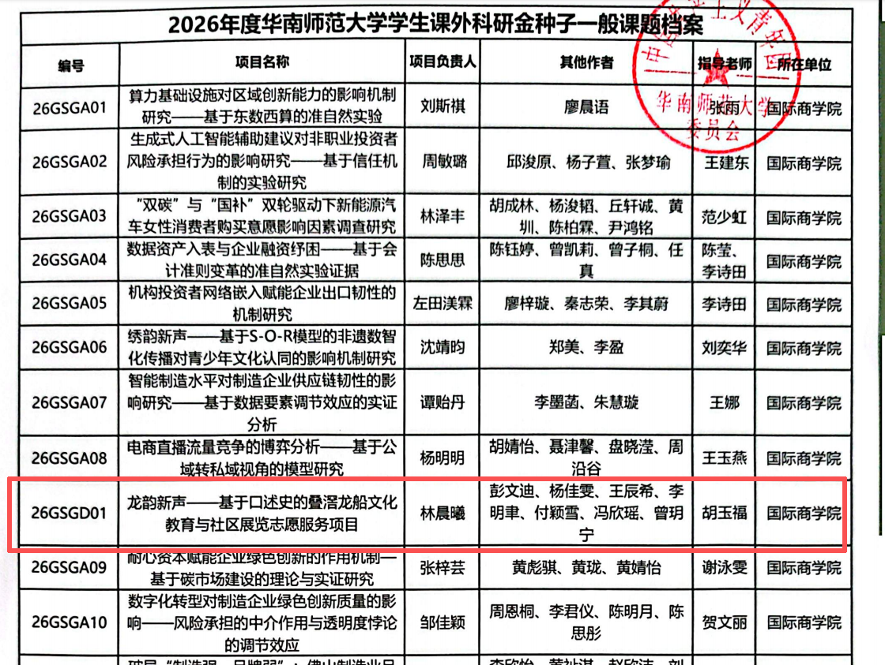
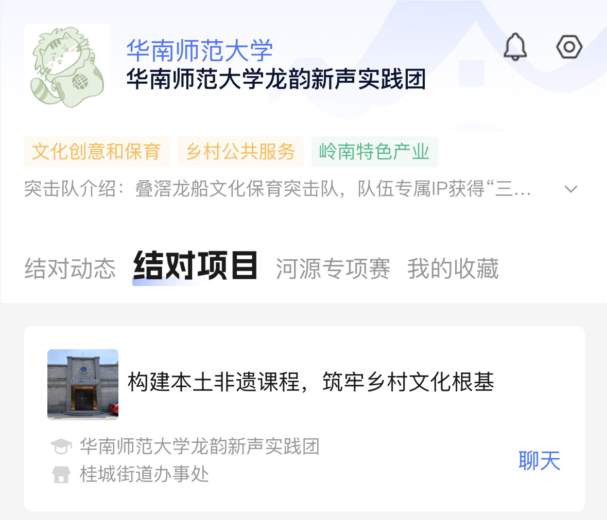
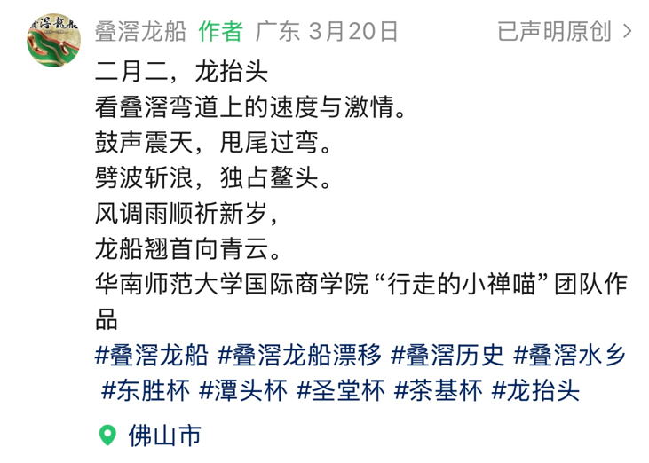
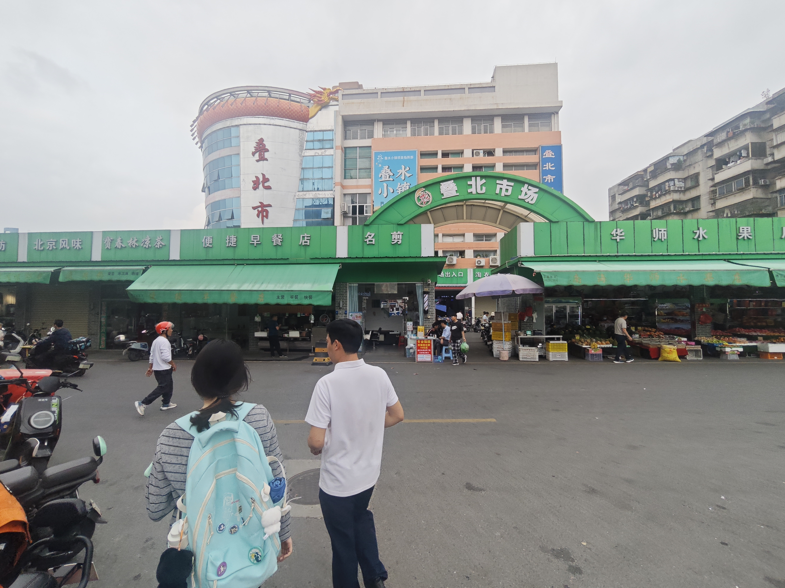
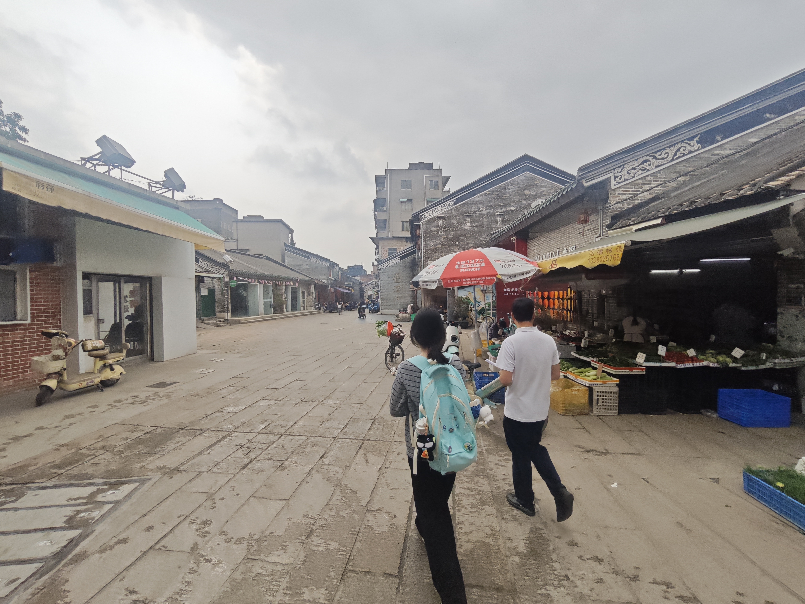
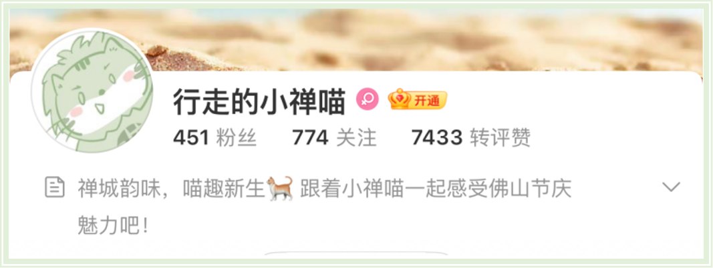
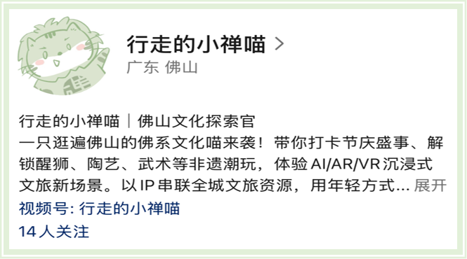

成果与足迹
从竞赛答辩到街巷走访，从社交平台到幼儿园课堂——小禅喵走过的每一步，都被收进这份档案里。
竞赛荣誉 · 01
从校赛到省级的认可
「行走的小禅喵」项目先后获得第十五届全国大学生电子商务“创新、创意及创业”挑战赛校赛一等奖、中国国际大学生创新大赛（2025）校赛优胜奖，并获 2026 年度华南师范大学学生课外科研金种子一般课题立项。



落地证明 · 02
真的走进社区、走进课堂
项目与桂城街道叠北社区、叠北幼儿园建立结对关系，开展公益宣讲，并获官方媒体关注与报道。



实地调研 · 04
走进叠北，走到现场
团队多次前往叠滘叠北社区开展实地调研，走访街巷、市场与居民，把口述记忆和现场观察一并收进档案。


小禅喵在线上
「行走的小禅喵」在微博、微信视频号、小红书等平台同步运营，用年轻人喜欢的方式讲叠滘龙船故事。

微博 · 行走的小禅喵
佛山文化探索官 · 带你打卡节庆盛事

微信视频号 · 行走的小禅喵
视频号：行走的小禅喵
小红书 · 行走的小禅喵
小红书号：4152691034 · 禅城韵味，喵趣新生